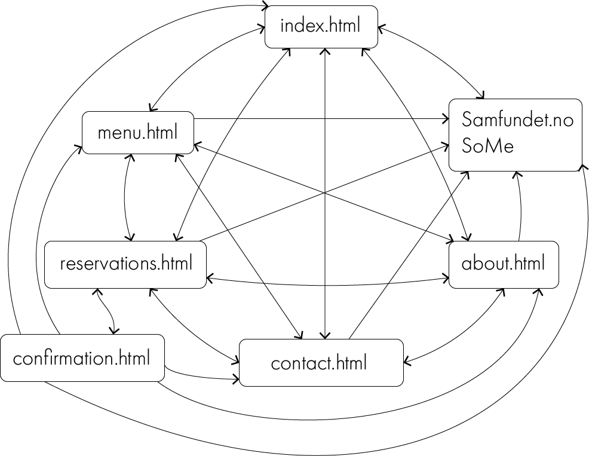

11. November 2018
This webpage is made for the resturant Lyche.
The vision is to make the final location the site can be visited from at: lyche.samfundet.no.
The contact persons for this project is Merete Lunde Bertheau, the PR an Profile responsible for the restaurant together with Alexander Wang.
You can find our webpage via this link: Lyche webpage
There has been a couple of changes in the coding of the basic apperance of the web site. Some of these changes are made because we found it better looking than what the plan said, and some of them are due to the reactiveness requirement. For example we have changed the font size to be a bit smaller, and in addition it scales with the page.
Listing of the changes:
When visiting the web page, the user will see a slideshow with photos of food, as intended. We decided to remove the “make a reservation” button from the bottom right corner so that the page would have a “cleaner” design.
We decided to remove “contact” from index, so “contact” can be excessed either from the burger menu, or from a button in the information section at the top of the index page. No contact information in index, only in a separate html.
Changed the picture in index_reservation from one of the resturant, to one displaying a dish, mussels.
Also there was added a button at the bottom of each part for navigation to the full htmls for that topic.
"Book here" button removed was removed from the page because we found it unnecessary, and instead of linking to samfundes social media in the html, we implemented it in the footer.
The reservation form contains the input fields name, number of people, date and time, email and extra information. Some explaining text about restrictions, and lyches email address was added above the form.
The date picker is changed from always showing the calendar to a horizontal line, same appearance as the other input fields, with a calendar symbol to the right. The user can either choose a date from the date picker, or else write the date in the input field. This change was made because of the restrictions of using plug-ins.
The input fields were made wider, and the margin left of the form was decreased so that the header, text and form have the same start position. The photo was changed from pai_liten.png to mussels_croped.png for visual purposes. A submit button was added beneath the form, and a red “star” in each required form was also added.
A new html was added, confirmation.html. This is the page the user is sent to when the form is submitted. It has the same styling and image as reservation.html and displays a text that states that the form was successfully submitted.
In about.html, we changed the margin-left to 10% so that it would be visually more similar to the other pages, and the header is in line with the text. We choose not to include text about lyches history, as we intended, because we did not find it necessary.
Changed location. Included the opening hours and isOpen-script in contact.html, accessed from index.html or the burger menu.
The footer was written entirely in Java Scrips and implemented on every html page, with styling from footer.css. The footer is the same as the one from samfundet.no such that the pages is connected design wise. We wanted our web page to have a universal design and be facilitated people with impaired vision. With this in mind, the text has been made a bit larger, and the colour a bit brighter.
For p2 we wrote that we would have .part for navbar and footer, and thought of this as a html that was a part that we could import into the other htmls. As we tried to execute this, we found that the easiest way to do it was to put the html code for these objects into the associated javascripts, and use this to import the html on the page. Hence we hva no files called .part or .html for the navbar and the footer.
The final navigation structure is close to the one originally planned, except that information.html was changed to contact.html. Additionally we added an arrow from samfundet and social media to index.html because it should be possible to access Lyches home page from these external pages. Also we had to add the confirmation.html which can only be reached from reservation, but where you still can navigate to all the other pages.
List of files and folders:
In this project we have all worked together to create the final web page. This makes it difficult to state exactly who did what, but here's a short summary of how each person fulfilled their minimum requirements.
Johanna made the contact.html page, and the others implemented the footer and top bar and helped her make it responsive.
Helle and Helene worked on index.html and the responsiveness of this.
Helene worked the most on the navigation bar and footer, and found out how we could implement it with use of JavaScript.
Helle and Helene worked on the design of the navigation bar and hamburger menu. Helene implemented the animation and the JavaScript.
Andrea worked on the reservation.html and confirmation.html documents. The pages are connected through a JavaScript function, also made by Andrea. The form is validated before it is submitted through a JavaScript that checks the mail address.
Andrea worked on implementing the footer correctly in every html.
We all made the CSS to our associated html-pages and collaborated to make the main style sheet.
Helle made the lang.js and found out how to use session storage to make this work across all the htmls. Because of the session storage used, this does not work when just opening the html-files in the browser, but works when the page is loded from a server.
Johanna created the isOpen-script and implemented it in contact.html.
We have all contributed to the writing of the P3-changes document, and made the neccessary changes in the code after the page was about done, so that it would fulfill the requirements given in the project description.
Merete and Johanna made the testing documents, did the live testing and collected and interpreted the test results from the Google Form.
The issue of modularity was met both when it came to the footer and the navigationbar. We solved this by putting the html-code for the items into the appropriate javaScript files, and then inserting in in the appropriate places in all of the htmls by using js. By doing it this way we avoided writing the same html several times, and thus we avoided using unnecessary memory capacity. It was mostly Helene Lavre who worked on this implementation, with assistance from the others in the group.
This table shows who started on and did the main part of the different files. It is not 100% accurate, since for almost all files we have worked together and helped eacother out. For most of the files we have all made some changes as we noticed small bugs and design-errors.
At first, we intended to collect all styling in the same css. As the web site grew bigger, this became large and messy. Therefore, we decided to move all individual code to different style sheets, but kept one main stylesheet, main.css. main.css contains all code that is used in several documents such as font, font-size, background-color and so on.
| Filename | Description | In charge | Deadline |
|---|---|---|---|
| index.html | The first page that will appear when user visit the webpage | Helle og Helene | 18/10-2018 |
| menu.html | pdf/img/list with full menu | Merete | 18/10-2018 |
| contact.html | Contact information, opening hours, social media | Johanna | 18/10-2018 |
| reservations.html | A form to fill in for reservations containing name, date and time and also information about how to cancel the reservation | Andrea | 18/10-2018 |
| confirmation.html | Site that appears after form has been validated correctly and reservation has been made | Andrea | 18/10-2018 |
| about.html | Pictures, the restaurants history, how it is to work at samfundet | Merete | 18/10-2018 |
| contact.html | Contact information, opening hours, social media | Johanna | 18/10-2018 |
| lang.js | Changes language between norwegian and english. Follows navigation between pages. | Helle | 1/11-2018 |
| slideshow.js | Random pictures appear each time the webpage is opened. In header? | Merete | 1/11-2018 |
| form.js | Javascript for the form on reservation.html | Andrea | 1/11-2018 |
| isOpen.js | Displays whether the resturant is open or not, possibly how long it is until opening hours again | Johanna | 1/11-2018 |
| navbar.js | Navigation bar with the burger menu, logo og language switch will appare when the user is scrolling down. | Helene og Helle | 1/11-2018 |
| footer.js | The footer will be displayed on every page | Helene | 1/11-2018 |
| slideshow.js | The slideshow for header on index.html | Merete | 1/11-2018 |
| main.css | Main stylesheet | All | 1/11-2018 |
| index.css | Stylesheet for index.html | Helle and Helene | 1/11-2018 |
| about.css | Stylesheet for about.html | Merete | 1/11-2018 |
| menu.css | Stylesheet for meny.html | Merete | 1/11-2018 |
| contact.css | Stylesheet for contact | Johanna | 1/11-2018 |
| reservaton.css | Stylesheet for reservation | Andrea | 1/11-2018 |
| slideshow.css | Stylesheet for slideshow | Merete | 1/11-2018 |
| footer.css | Stylesheet for the footer | Andrea, Merete and Helene | 1/11-2018 |
| navbar.css | Stylesheet for the navigation bar | Helene and Helle | 1/11-2018 |
| Final controlls | Checking all the files for errors (html, javascript and CSS) | All | 8/11-2018 |